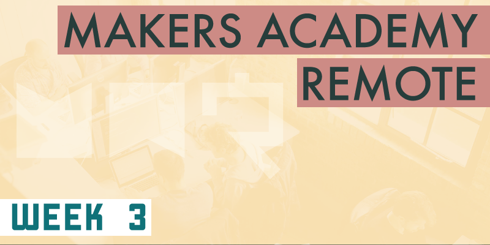

Badges?!
I can't tell you why seeing badges on my GitHub repositories makes me smile, it just does. Badges are the small icons seen in the image below that read data from various services that your project might use, and display that data proudly from within the project's README file. This week we've begun adding these badges to our repos, in our case to display the Travis CI build status, signifying that all feature and unit tests are passing, and the Coveralls coverage status, which communicates the percentage of our code base that is covered by tests.
GitHub build badges
Several more badges are available for a huge variety of services. These badges are trivial to implement once the service in question is being utilised, but seeing them sit proudly atop a repo's README makes that repo appear quite professional, probably because all of the larger repos seem to have them. Yeah I'm a geek, but imposter syndrome is a huge problem in the tech industry and anything that gives a confidence boost is welcomed by me.
I can hardly believe that the course is one quarter way through already. It's going frighteningly quick, but when I compare what I know now to what I knew only three weeks ago, the improvement is extraordinary.
Escaping the command line
This week we've moved away from the confines of Ruby programs running on the command line, and have begun building web applications. Throughout the week we've been introduced to several new technologies including the Sinatra Ruby framework, Rack, which is the underlying technology upon which Sinatra is built, and Capybara, a front end testing framework.
We've also been taught the fundamentals of how the web works, beginning with client-server relationships, and progressing to the various layers of logic that comprise a server. We've covered HTTP requests and their content, HTTP status codes, the Chrome browser developer tools and the basics of HTML and CSS.
All of the above has made for a very interesting week, and one that's offered a refreshing change from what we'd been focusing on for the last 6 weeks (including the 4 week long pre-course). It's been really interesting to see how the back end Ruby code that we've been using in previous weeks communicates with the server routing code and the front end code to create what is almost considered a full stack web application. I say almost, because we haven't covered persistent storage via databases yet, so we've been persisting our data within global variables. However we've been told more times than I can count that global variables are bad practice, and should rarely if ever be used within production code. Once we learn about databases next week we'll have covered the full stack, and can largely leave global variables behind.
It's nice to see how everything in this course builds upon previously learned concepts. Sinatra would have been very daunting if it wasn't for the fact that we're all feeling quite confident coding in Ruby now. Testing front end interactions with Capybara would seem incredibly complicated if it wasn't for the fact that it works in much the same was as the Rspec testing framework which we've been using for the past three weeks. Three weeks doesn't sound a long time, I know, but using a tool all day, every day for three weeks can make it feel familiar quite quickly.
RPSLS
As for the weekend challenge, we were tasked with solidifying the week's concepts by building a web-based version of the popular Rock Paper Scissors (RPS) game. A game of RPS is trivial to code (even if you do optionally add Lizard and Spock into the mix, as I chose to), but it's in properly structuring the code as a web app that the challenge lies. The main logic had to be handled by Ruby, using upon the Sinatra framework to provide the routing/controlling and views. Rspec was used to test the back end and Capybara to test the front end. HTML was used to build out the website content. HTTP Get requests were used to read from the website, and post requests were used to push player names and choices to the back end. RPS may not sound like much of challenge, but it's the fact that it provided an opportunity to use all of these technologies together that made it so useful as study aid, and so complicated to implement.
Enter your name...
...choose your weapon...
...draw...
...lose...
...win! Rock Paper Scissors Lizard Spock, running in a browser rather than the command line!
Student-led break-outs
In an interesting turn of events some of us students have started holding break-out sessions at around 5pm each day. These sessions are hosted without a coach, and provide an informal surrounding in which to discuss pretty much anything we want. Some days a particular student might have a topic that they feel confident about to demonstrate to the group. Other days the break-out might be more unstructured and act as a group discussion about topics that might need clarifying. Other days still we might begin with one agenda and detour to somewhere completely unexpected. These student-led break-outs have been fantastic, I've made an effort to attend every one, and I've learned something new each time.
Somehow week 3 has been even more fun than the weeks that came before it. The work is challenging and fun, the group of people I'm working with seems to get better each day, and our coach is fantastic at describing difficult concepts in an easy to understand way.